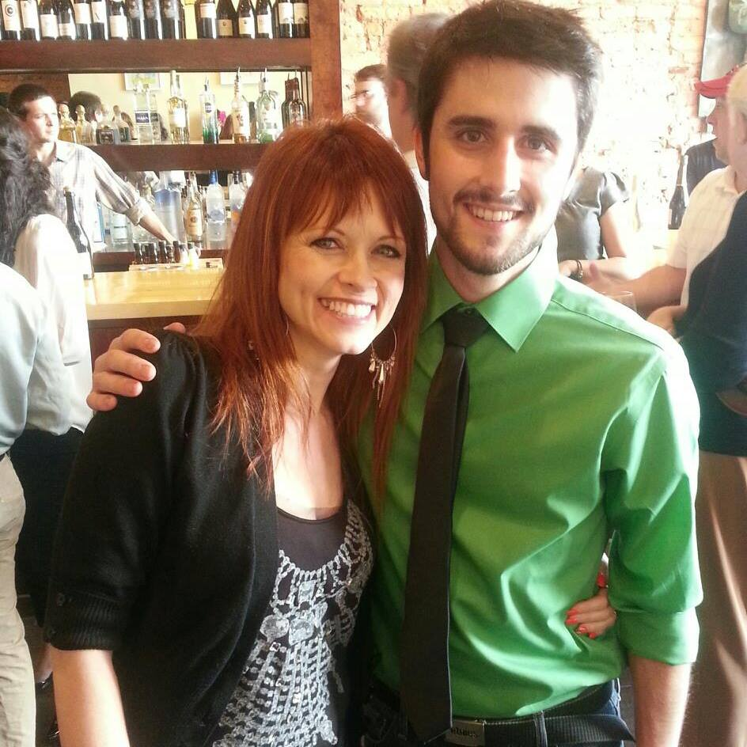
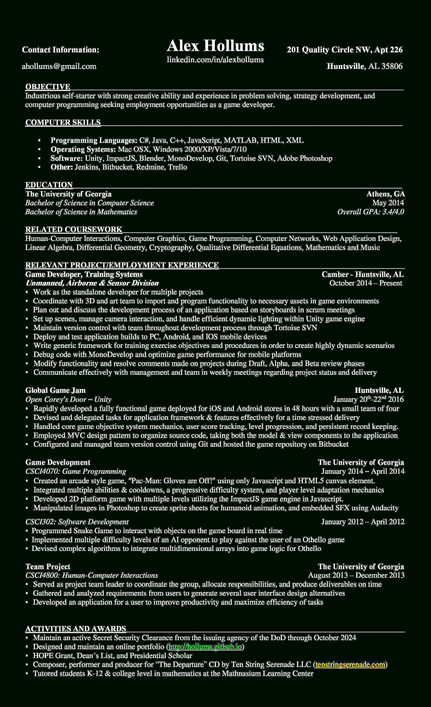

Needless to say: I am a gamer, and a nerd. I embrace this.
As soon as I could hold a controller, I've been fascinated with video games. In my early years, my friends and I would make a weekly ritual of playing the first Halo on Microsoft's Xbox console, and every week our setup would become more and more elaborate. More people, multiple systems linked together, multiple TV's across the house, longer chords for controllers to make our time pass more comfortably leaned back in chairs or couches, you name it, we thought of it.
As I got older, I was exposed to my first "Blizzard" game, called Diablo. I was hooked immediately. Again, my buddies and I would get together and play this game religiously. Multiple computers, pizza, energy drinks -- the whole shabang. This was also my first MMORPG (Massively Multiplayer Online Role Playing Game -- quite the mouthful), and it exposed me to a new side of gaming: the social aspect. Queue the snorts of laughter from the average guy who spent most his time outdoors and talking to the babes - and I don't blame him. You can't know the rich community these games provide until you've experienced it.
From Diablo, I went to World of Warcraft, next to Starcraft... basically whatever else Blizzard produced, I would dive into. I made great friends playing these games, some coincidentally who lived right down the street even - I just hadn't met them. Honestly, without the social outlet these games provided, I probably wouldn't ever have met them. From these games, I met a wide range of people: of differing ages, some that lived across the country, others across the world; and to this day I still keep up with many them, and consider them to be some of my best friends. I learned so much from these people and in a way these games helped shape who I have grown up to become today.
This is why I am passionate about becoming a video game developer. Sure I love to play games, and even more to make them. But above all, I want to be a part of this community, I want to give back, I want every kid and adult alike to have more opportunities to get involved in these social communities.
In the gaming community, nobody will judge you for how old you are, where you're from, or what you look like. It's a community that everyone gets together to have fun. Not so different from a family sitting around a board game, having a way that Mom, Dad, and the kids can put aside their different lives and different schedules and simply enjoy their time together. Just read the side of the box - everyone from ages 8+ can play - and compete as equal competitors in a common environment. With these MMO games, your family is the online community with millions of players to interact with. So, jump in and play!
Well that concludes this fireside chat about video games today with Alex Hollums...
As I got older, I was exposed to my first "Blizzard" game, called Diablo. I was hooked immediately. Again, my buddies and I would get together and play this game religiously. Multiple computers, pizza, energy drinks -- the whole shabang. This was also my first MMORPG (Massively Multiplayer Online Role Playing Game -- quite the mouthful), and it exposed me to a new side of gaming: the social aspect. Queue the snorts of laughter from the average guy who spent most his time outdoors and talking to the babes - and I don't blame him. You can't know the rich community these games provide until you've experienced it.
From Diablo, I went to World of Warcraft, next to Starcraft... basically whatever else Blizzard produced, I would dive into. I made great friends playing these games, some coincidentally who lived right down the street even - I just hadn't met them. Honestly, without the social outlet these games provided, I probably wouldn't ever have met them. From these games, I met a wide range of people: of differing ages, some that lived across the country, others across the world; and to this day I still keep up with many them, and consider them to be some of my best friends. I learned so much from these people and in a way these games helped shape who I have grown up to become today.
This is why I am passionate about becoming a video game developer. Sure I love to play games, and even more to make them. But above all, I want to be a part of this community, I want to give back, I want every kid and adult alike to have more opportunities to get involved in these social communities.
In the gaming community, nobody will judge you for how old you are, where you're from, or what you look like. It's a community that everyone gets together to have fun. Not so different from a family sitting around a board game, having a way that Mom, Dad, and the kids can put aside their different lives and different schedules and simply enjoy their time together. Just read the side of the box - everyone from ages 8+ can play - and compete as equal competitors in a common environment. With these MMO games, your family is the online community with millions of players to interact with. So, jump in and play!
Well that concludes this fireside chat about video games today with Alex Hollums...

I began in college with the Mathematics major, since I always had an aptitude for it in high school. In my second semester of college, I took a CSCI1301 course at Kennesaw State University in which I excelled at with great enthusiasm. After I transferred to University of Georgia, I declared a second major in Computer Science.
Between my rigorous courses in Mathematics on and my heavy work load from my courses in Computer Science, I kept pretty busy at UGA. Apart from the material I learned at school, I also learned how to prioritize my time well, and plan ahead for projects and assignments. Way ahead...
My favorite math class I had taken at UGA was Cryptography: where Number Theory meets Computer Science! I thoroughly enjoyed the math that goes into the algorithms the computers use today to encrypt sensitive data over the web. On the other hand, my favorite Computer Science class I had taken was Game Programming. Had this been the only class I took that semester, I would have spent the entirety of the semester perfecting the games and projects for this class. Sadly, there was too little time to do it all.
I can now proudly say that I am an alumni of the University of Georgia (Go Dawgs!) I graduated with a double major in Mathematics and Computer Science.
Between my rigorous courses in Mathematics on and my heavy work load from my courses in Computer Science, I kept pretty busy at UGA. Apart from the material I learned at school, I also learned how to prioritize my time well, and plan ahead for projects and assignments. Way ahead...
My favorite math class I had taken at UGA was Cryptography: where Number Theory meets Computer Science! I thoroughly enjoyed the math that goes into the algorithms the computers use today to encrypt sensitive data over the web. On the other hand, my favorite Computer Science class I had taken was Game Programming. Had this been the only class I took that semester, I would have spent the entirety of the semester perfecting the games and projects for this class. Sadly, there was too little time to do it all.
I can now proudly say that I am an alumni of the University of Georgia (Go Dawgs!) I graduated with a double major in Mathematics and Computer Science.
